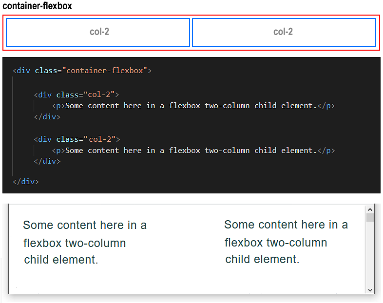
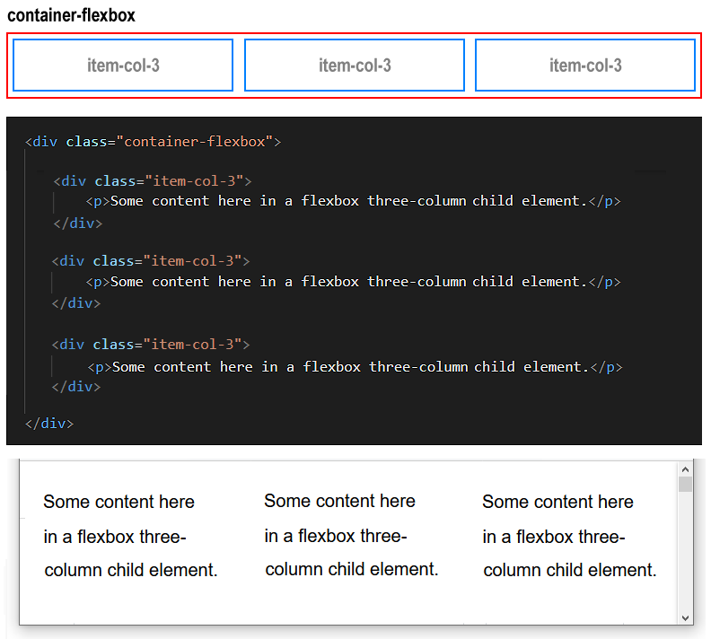
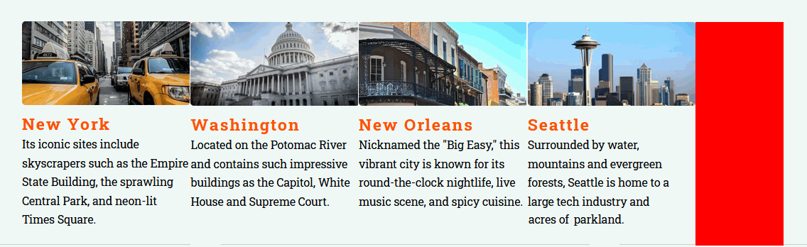
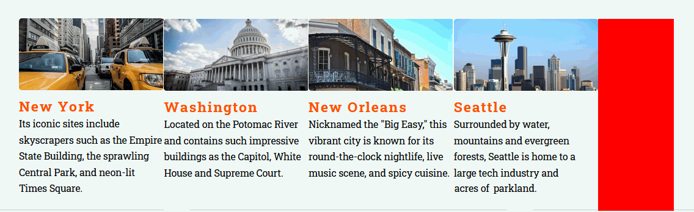
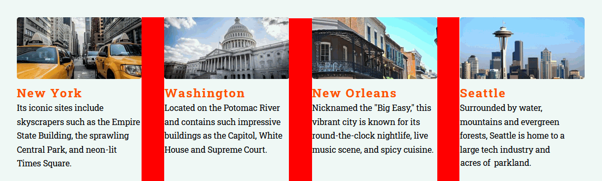

About CSS flexbox
CSS flexbox is one of two layout methods web designers use to arrange web page content into rows and columns. (The other is called CSS grid.)


At the end of this Tutorial you will be able to:
There are no sample files to download, create or update in this Tutorial.
CSS flexbox is one of two layout methods web designers use to arrange web page content into rows and columns. (The other is called CSS grid.)
The flexbox layout technique is based on the concept of parent and child elements.
Below is an example of the flexbox technique used to create a two-column layout on desktop/laptop screens.
Below is a three-column layout for desktop/laptop screens created with flexbox.
It is the parent element in a flexbox layout that makes it a flexbox layout. In particular, it is one CSS property and value pair of the parent element. See below.
/* == FLEXBOX PARENT CONTAINER == */ .container-flexbox { display: flex; }
This one style rule of display: flex is enough to make an element a flexbox parent container.
In practice, however, you will want to add two further CSS property-value pairs to your flexbox parent containers, as shown below.
/* == FLEXBOX PARENT CONTAINER == */ .container-flexbox { display: flex; justify-content: space-between; flex-wrap: wrap; }
Let’s look at each of these justify-content and flex-wrap properties in turn, and discover why they are necessary.
When you arrange web page content in two, three of four columns, you will typically want to include some empty spacing between the columns.
This inter-column spacing is known as the gutter, a term inherited from print design.

The total gutter spacing (of one, two or three gutters) is the space remaining or ‘left over’ after the child elements have filled their defined widths.
A flexbox parent container has a CSS property called justify-content that controls how the gutter spacing is displayed, left-to-right, across the screen.
Unfortunately, the CSS justify-content property has a default value of flex-start that will:
 

To instead distribute this space evenly between the columns in gutters, you need to overrule the default value of the justify-content property by entering the value of space-between in the CSS stylesheet.

This will create the desired result of evenly-spaced columns in your web browser.
There is one more CSS property-value pair that you will usually want to apply to your parent flexbox containers.
This property enables child elements to be split or wrapped across multiple rows within a parent element.
Consider the following three-column layout, displayed under a sub-heading.

What would happen is you added three more child elements to this layout? The result will be as shown below.

As you can see, the parent flexbox container forces all six child elements to display on a single row, left-to-right, across the screen.
This is because a parent flexbox container has a CSS property called flex-wrap with a default value of no-wrap.

How can you retain your three-column layout, now that it contains six child elements? The effect you want to achieve is shown below.

The solution is to override the default nowrap value of the flex-wrap property by entering a value of wrap for the flexbox parent container as shown below.

There are many other CSS properties and values you can assign to flexbox parent containers. But for most practical web page layouts, setting values for the display, justify-content and flex-wrap properties is sufficient.

In a previous Tutorial you learnt how web pages are commonly sub-divided into vertical blocks of content.
These sections are designed to make the content more inviting and easier to read.

A section typically has some padding added around its four edges. See the example of a section named container-block below.

The result of the above CSS padding styles applied to a section would be similar to the following.

Typically, you will also want similar padding applied to flexbox parent containers, so that your multi-column layouts do not directly touch the browser left or right edges, or any other elements above or below them on the web page.

You can achieve the effect simply by adding the container-block class to your parent flexbox containers in your HTML web page.

Now that you understand the basics of CSS flexbox layout, in the next three Tutorials you will create web pages with two, three and four column layouts based on this technique.